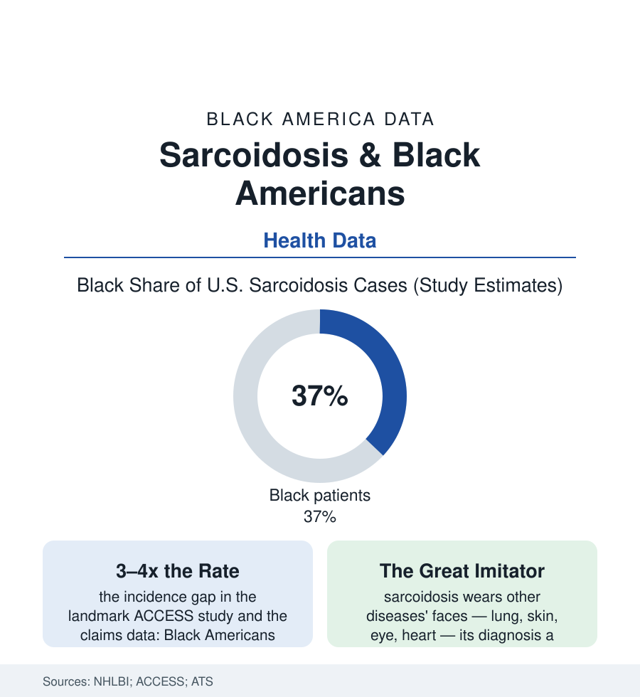

Black Public Health
Sarcoidosis: The Disease That Chose Black Women
Sarcoidosis strikes Black Americans at several times the rate of white Americans, hits Black women hardest, and kills at rates that make it this section's quiet outlier. The sarcoidosis file.

Some diseases distribute themselves with a precision that looks almost deliberate. Sarcoidosis — the inflammatory condition that builds clusters of immune cells, granulomas, in the lungs, skin, eyes, and heart — occurs in Black Americans at three to four times the rate in white Americans in the landmark federal studies, runs more severely in them, involves more organs, and kills them at markedly higher rates. Its favorite target, by the epidemiology's starkest rows, is the Black woman in her thirties and forties. This article reads the sarcoidosis file.
A Disease of Unknown Cause and Known Address
Sarcoidosis frustrates the file's usual structure because its cause remains genuinely unknown — the ACCESS study, the field's landmark case-control investigation, testing occupational and environmental exposures (the mold, the dusts, the infectious candidates) and genetics in turn, and leaving the field with associations rather than answers: the familial clustering rows (a sibling or parent with the disease multiplying risk in the study data — the disease running in Black families with a frequency the family-health-history file rarely captures, because the diagnosis itself was so often missed in the parents' generation), the geographic signature (the Southeast's rates, the rural exposures debated in the literature), and the ancestry gradient among the strongest of any disease in this section — the rates in Americans of West African descent towering over both white Americans and, in the comparative studies, over continental populations in ways that keep the gene-environment argument productively unresolved. The clinical course compounds the mystery's cost: the disease that resolves on its own in many white patients progresses, in the Black patient's data, toward the chronic and the fibrotic — the lungs scarring toward the transplant file, the cardiac sarcoid whose first symptom can be the fatal arrhythmia in the cardiology literature's most frightening rows, the neurosarcoid and the ocular disease in the specialty files. The diagnosis is by exclusion — there is no single test — which slots sarcoidosis into this section's most dangerous drawer: the disease whose confirmation requires persistence, referral, biopsy, and a physician who thinks of it, in a system whose diagnostic-delay data for Black patients (the endometriosis and lupus files' delays, measured in years) apply with compound interest to a condition most doctors rarely see and this population disproportionately has.
Treatment, Steroids, and the Long Middle
The treatment data describe a life administered around corticosteroids — the first-line therapy whose side-effect profile (the weight, the glucose, the bone loss, the mood) writes the diabetes and osteoporosis files' entries into the sarcoid patient's chart simultaneously, the steroid-sparing agents and the biologics behind them rationed by the pharmacy file's machinery through step therapy — and the monitoring regime (the pulmonary function labs, the cardiac imaging, the eye exams) assembling a specialty itinerary whose adherence mathematics the rehabilitation file would recognize. The outcomes rows state the accumulation: sarcoidosis mortality in the vital statistics running several-fold higher for Black patients, the deaths concentrated in the fibrotic-lung and cardiac presentations, the age at death younger — the disparity ratio among the widest for any single disease in this section relative to its (small) absolute numbers. The research investment stands in its usual inverse proportion in the funding data — a rare-disease budget for a disease that is only rare in the majority population — with the advocacy built, as in the sickle cell file, by the patients' own organizations and the Black pulmonologists' networks, the registries and the self-reported cohorts doing the data work the trials underfund. The file's closing recognition is the section's lesson in concentrated form: a disease can be uncommon in America and common in Black America at the same time, and the research system, organized around the first fact, will reliably underserve the second — until the patients make their own noise, in their own registries, at their own conferences, which is precisely the history this file records.
Reading the Sarcoidosis Data
Three to four times the incidence, a harder course, a higher death rate, and a cause still unassigned: sarcoidosis is the health file's purest case of a disparity without a villain the data can name — which makes it the test of whether the system can respond to a pattern it cannot yet explain. The registries publish the rates. The women managing the steroid calendar could annotate the rest from the inside.
More in Black Public Health
Hypertension Among Black Adults: Prevalence, Control, and Consequences
About 55 percent of Black adults have hypertension — the highest rate of any U.S. group. Prevalence, onset, control, and the stroke, heart, and kidney consequences in the data.
Diabetes Among Black Adults: Prevalence and Complications
Nearly one in five Black adults has diabetes, diagnosed or undiagnosed — and its complications fall with particular weight. The CDC data on prevalence, control, and outcomes.
Black Life Expectancy: The Gap at Birth and Its Causes
Black life expectancy at birth is about 73 years, roughly five years below the national figure — the summary measure of every health gap in this section. The CDC data.
Source: National Heart, Lung, and Blood Institute; ACCESS (A Case Control Etiologic Study of Sarcoidosis) research; American Thoracic Society; Arthritis Foundation epidemiology data.